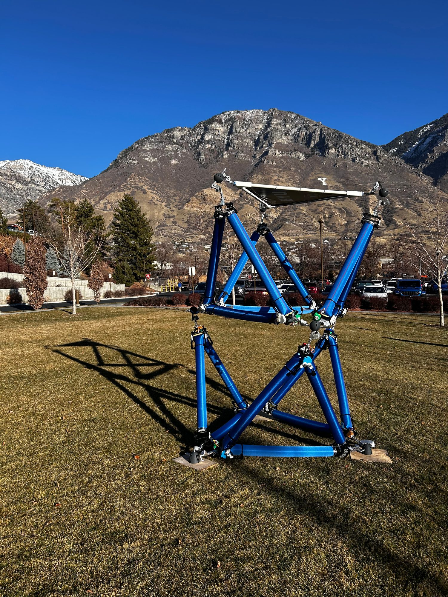
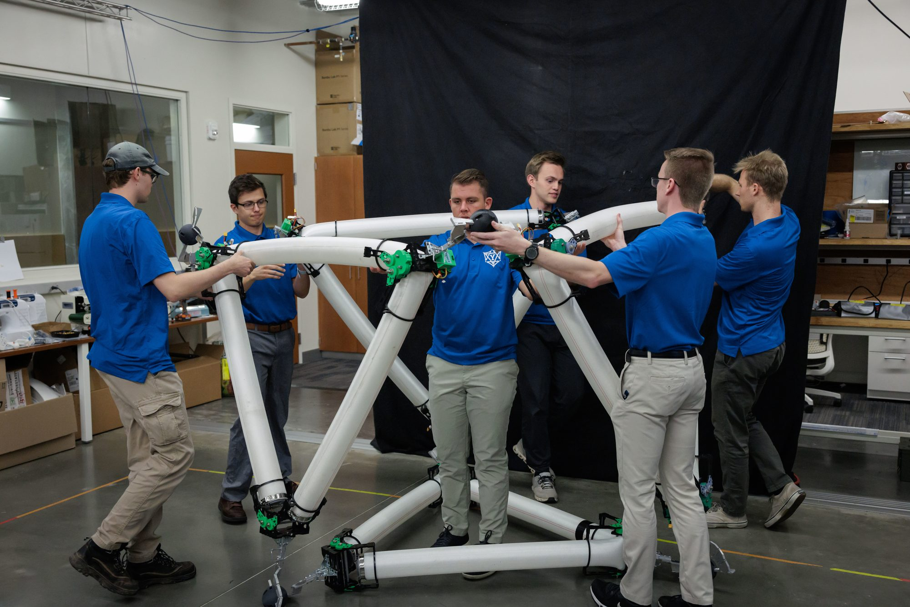
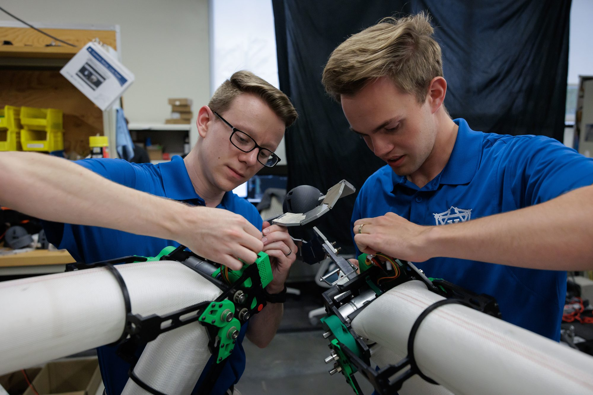
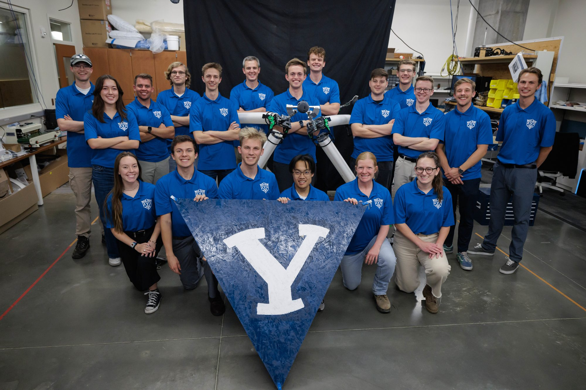

PhD research / CMR Lab
Isoperimetric
truss robotics
Developing optimization and long-horizon control methods for modular, inflatable robotic trusses.
Robot dynamics / optimization
Inflatable constant-perimeter truss robot
ROS 2 / embedded mechatronics
System photographs
A truss you
can reconfigure.
The inflatable truss system in lab assembly and outdoor configuration.




Research direction
Control for
changing structure.
My PhD research in BYU’s Compliant Mechanisms and Robotics Lab investigates modeling, optimization, and long-horizon control for dynamic compliant and inflatable robots. A central platform is an isoperimetric truss whose actuators reshape the structure while maintaining a constant perimeter.
- Faster inverse kinematics. Revised the single-step inverse-kinematics optimization with analytic Jacobians, bringing solve time below real time.
- Higher actuator capacity. Overhauled the motor driver and mechatronics to raise peak-current capacity from 5 A to 15 A.
- Faster robot communications. Replaced the Arduino Nano and NRF24L01 radio link with a dual-core ESP32-S3 and ROS 2 over 2.5 GHz Wi-Fi. Confirmed a 50 Hz message rate, up from 5 Hz.
Related work
Team system.
Individual research.
The arXiv preprint documents the broader modular truss system developed by a team. My current PhD work builds on this research area through control and optimization; the team project and my individual research are distinct contributions.